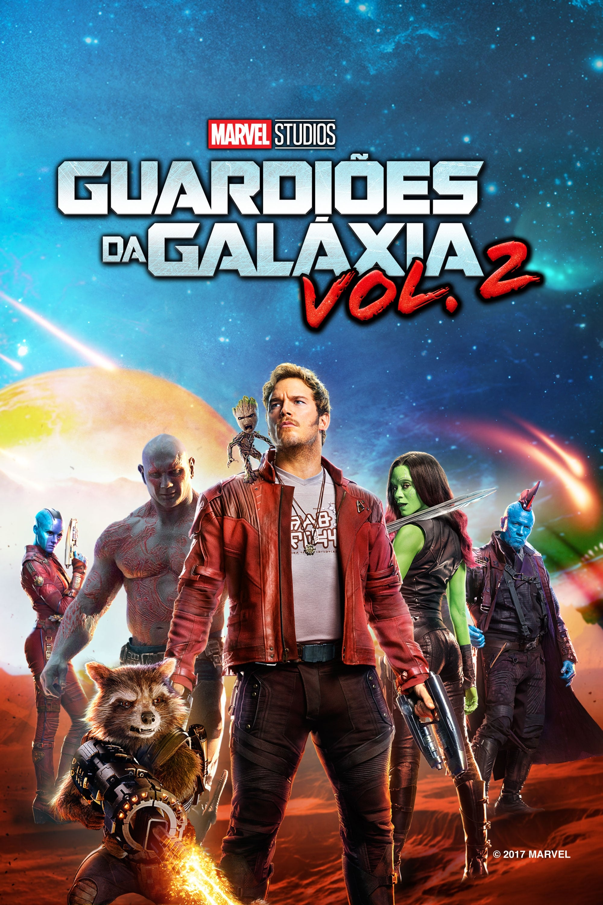

Diretor: James Gunn
Com: Chris Pratt, Zoe Saldana
Gênero: Ação, Aventura, comédia
Censura:12
Tempo de duração: 236 min
Sinopse:Depois de salvar Xandar da ira de Ronan, os Guardiões agora são reconhecidos como heróis. Agora, a equipe deve ajudar seu líder Star Lord (Chris Pratt) a descobrir a verdade por trás de sua verdadeira herança. Ao longo do caminho, velhos inimigos se voltam para aliados e a traição está florescendo. E os Guardiões descobrem que estão enfrentando uma nova ameaça devastadora que quer dominar a galáxia.